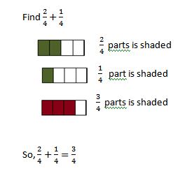
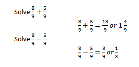

Explore and Discover!
Explore and Discover!

The Supreme Pupil Government (SPG) of Bussing School was able to collect 2/4kg of plastic bottles and 1/4kg of disposable spoons and forks for their project. Pera Mula sa Basura. How many kilograms of items did the pupils collect in all? How many kilograms more of plastic bottles than disposable spoons and forks were collected?
Notice that 2/4 and 1/4 are similar fractions.
When adding similar fractions, add the numerators and write the sum over the common denominator.
Answer: The SPG was able to collect 3/4kg of items.
To find the answer to the second question, subtract 1/4 from 2/4.
2/4 - 1/4 = 1/4
Answer: There was 1/4kg more of plastic bottles collected than disposable utensils.
In subtracting similar fractions, subtract the numerators and write the difference over the common denominator.
 Let's Practice!Solve the following equations.
3/5 + 1/5 = 4/5
7/11 - 2/11 = 5/11
4/7 + 2/7 = 6/7
10/15 - 3/15 = 7/15
3/8 + 2/8 = 5/8
13/21 - 8/21 = 5/21